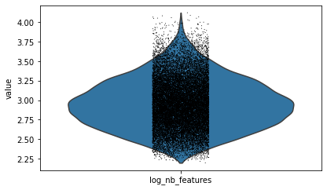
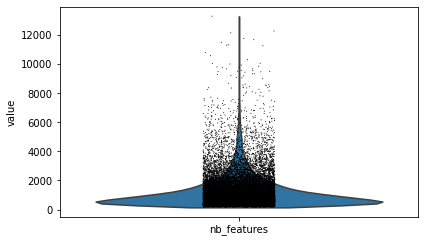

MOFA分析：scATAC-seq数据处理
由于单细胞ATAC-seq数据依然较大，我们需要对其进行过滤
1. 数据准备
1.1 导入包
import anndata
import networkx as nx
import scanpy as sc
from matplotlib import rcParams
import pandas as pd
import numpy as np
import episcanpy.api as epi
1.2 导入数据
atac_pair = anndata.read_h5ad("atac_pair.h5ad")
new_pair=pd.read_csv('mofa_pre_pair.csv')
1.3 配对细胞重命名
#new_cell=[]
#for i in atac_pair.obs.index:
# new_cell.append(new_pair[new_pair['scATAC']==i]['sample'].iloc[0])
#atac_pair.obs.index=new_cell
#new_cell[:5]
r1=atac_pair[new_pair['scATAC']]
r1.obs.index=new_pair.index.values
r1.write_h5ad('atac_mofa_pre1.h5ad',compression="gzip")#必须先保存
atac_pair=anndata.read_h5ad("atac_mofa_pre1.h5ad")
1.4 染色体位置重命名
lo=[]
for i in atac_pair.var_names:
lo.append(i.replace(':','_').replace('-','_'))
atac_pair.var.index=lo
1.5 染色体位置相关基因标注
1.5.1 Annotation下载
wget ftp://ftp.ebi.ac.uk/pub/databases/gencode/Gencode_human/release_19/gencode.v19.annotation.gtf.gz -O gencode.v19.annotation.gtf.gz
gunzip gencode.v19.annotation.gtf
1.5.2 Annotation标注
epi.tl.find_genes(atac_pair,
gtf_file='gencode.v19.annotation.gtf',
key_added='transcript_annotation',
upstream=2000,
feature_type='transcript',
annotation='HAVANA',
raw=False)
2. 数据处理
2.1 过滤空feature跟barcode
# remove any potential empty features or barcodes
epi.pp.filter_cells(atac_pair, min_features=1)
epi.pp.filter_features(atac_pair, min_cells=1)
atac_pair
AnnData object with n_obs × n_vars = 23770 × 214125
2.2 对数化
atac_pair.obs['log_nb_features'] = [np.log10(x) for x in atac_pair.obs['nb_features']]
epi.pl.violin(atac_pair, ['nb_features'])
epi.pl.violin(atac_pair, ['log_nb_features'])

2.3 设置每个细胞最小具有的feature数
# set a minimum number of cells to keep
min_features = 400
epi.pp.coverage_cells(atac_pair, binary=True, log=False, bins=50,
threshold=min_features, save='Buenrostro_bulk_peaks_coverage_cells.png')
epi.pp.coverage_cells(atac_pair, binary=True, log=10, bins=50,
threshold=min_features, save='Buenrostro_bulk_peaks_coverage_cells_log10.png')


2.4 设置每个feature存在于最小的细胞数
# minimum number of cells sharing a feature
min_cells = 80
epi.pp.coverage_features(atac_pair, binary=True, log=False,
threshold=min_cells, save='Buenrostro_bulk_peaks_coverage_peaks.png')
epi.pp.coverage_features(atac_pair, binary=True, log=True,
threshold=min_cells, save='Buenrostro_bulk_peaks_coverage_peaks_log10.png')


2.5 过滤细胞与feature
min_features = 400
epi.pp.filter_cells(atac_pair, min_features=min_features)
min_cells = 80
epi.pp.filter_features(atac_pair, min_cells=min_cells)
2.6 计算高变feature
min_score_value = 0.515
nb_feature_selected = 20000
epi.pl.variability_features(atac_pair,log=None,
min_score=min_score_value, nb_features=nb_feature_selected,
save='variability_features_plot_bonemarrow_peakmatrix.png')
epi.pl.variability_features(atac_pair,log='log10',
min_score=min_score_value, nb_features=nb_feature_selected,
save='variability_features_plot_bonemarrow_peakmatrix_log10.png')


3. 过滤高变feature的cell
atac_pair.raw=atac_pair
# create a new AnnData containing only the most variable features
atac_pair = epi.pp.select_var_feature(atac_pair,nb_features=nb_feature_selected,show=False,copy=True)
epi.pl.violin(atac_pair, ['nb_features'])
epi.pl.violin(atac_pair, ['log_nb_features'])


epi.pp.filter_cells(atac_pair, min_features=1000)
epi.pp.filter_cells(atac_pair, max_features=4000)
atac_pair.write_h5ad('atac_mofa.h5ad',compression="gzip")